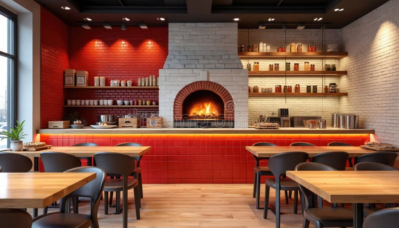
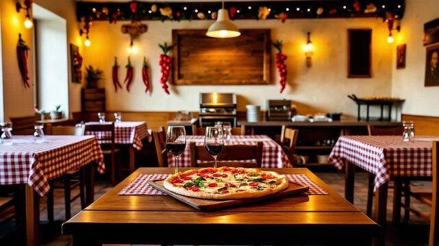

Tutto è iniziato nel 1985, quando nonno Marco ha aperto la pizzeria portando con sé la ricetta di famiglia da Napoli. Da allora, ogni impasto è preparato a mano ogni mattina.
Oggi la tradizione continua con la terza generazione, con la stessa passione di sempre.
Legno, mattoni a vista e il profumo del forno a legna: la nostra sala è pensata per farti sentire a casa. Accogliamo famiglie, gruppi di amici e chi cena da solo con la stessa cura.
